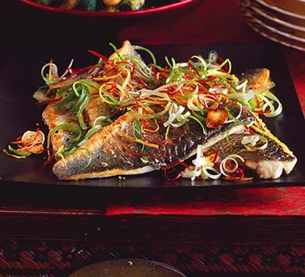

Home
Sea bass

Description
Chinese inspired fried sea bass
Ingredients
- 6 x sea bass fillets, about 140g/5oz each, skin on and scaled
- about 3 tbsp sunflower oil
- large knob of ginger, peeled and shredded into matchsticks
- 3 garlic cloves, thinly sliced
- 3 fat, fresh red chillies deseeded and thinly shredded
- bunch spring onion, shredded long-ways
- 1 tbsp soy sauce
Steps
- Season 6 sea bass fillets with salt and pepper, then slash the skin 3 times.
- Heat a heavy-based frying pan and add 1 tbsp sunflower oil.
- Once hot, fry the sea bass fillets, skin-side down, for 5 mins or until the skin is very crisp and golden. The fish will be almost cooked through.
- Turn over, cook for another 30 seconds - 1 minute, then transfer to a serving plate and keep warm. You’ll need to fry the sea bass fillets in 2 batches.
- Heat 2 tbsp sunflower oil, then fry the large knob of peeled ginger, cut into matchsticks, 3 thinly sliced garlic cloves and 3 thinly shredded red chillies for about 2 mins until golden.
- Take off the heat and toss in the bunch of shredded spring onions. Splash the fish with 1 tbsp soy sauce and spoon over the contents of the pan.